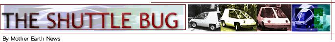
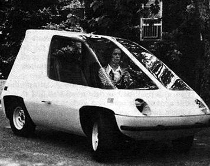
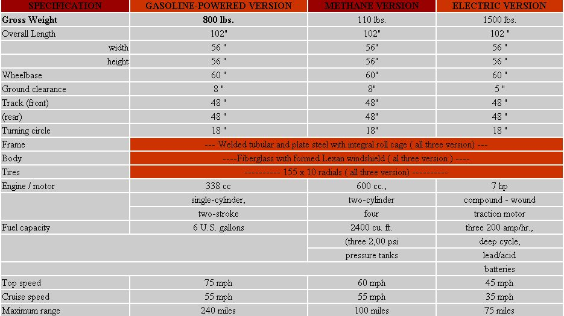

OK gang. Time for a short report on THE Mother Earth News @ Alternative Energy Vehicle (now known as the SHUTTLEBUG)
To recap: This project was begun early last winter when we successfully demonstrated to the press that we could too produce methane from cow manure and, what's more, we could use that methane to fuel everything from a gaslight to a natural gas refrigerator to a 1948 Chevrolet Six automobile engine.
"Aha!" exclaimed one of the wire services around the first of the year when the flow of petrol began to slacken in this country, "THE Mother Earth News@ nuts think they can run a car on methane. Let's see them do it."
At that point, we hastened to explain that, while we thought methane was just fine for stationary applications-heating a house, drying grain, cooking, etc.-we didn't think it was a particularly good fuel for a moving vehicle. "Methane," we said, "is the lightest of the gaseous hydrocarbons. You'd have to tow a blimp around behind you if you wanted to go any distance with it in an ordinary (overweight and overpowered) American car.
" "Oho!" said the wire service. "You really can't run a car on methane after all."
"Well we can," we said, "but . . . .
"Prove it."
So OK. So we decided to prove it. But first we decided to build a little bug designed (1) just for methane operation and
(2) to make more sense for the kind of urban driving that, increasingly, millions of U.S. citizens find themselves trapped into doing.
"We'll make our car ultra-small," we said. "We'll make it ultra-light. But, at the same time, we'll make it hell for stout with a triple roll bar over the cabin and a big, solid chunk of 4" channel iron right down each side to protect the driver and passenger. And we will design our little bug as a two-place . . . no need,to drag five empty seats around with you when you just want to run across town to get a corned beef sandwich. We'll put in a very small engine that will sip the absolute minimum amount of methane but, due to the automobile's extremely small frontal area, smooth aerodynamic lines and super-light weight, still push the little bus around at a lively pace. And above all, we'll simplify, simplify, simplify everything. Hinge up the whole front end instead of put two doors on the cabin. Form the entire body of only three or four pieces of fiberglass, instead of hundreds of metal panels, bolts, washers, sealers, etc. Forget the air conditioning, power seats and other gizmos that Detroit hangs on all its chariots."
And so we began. And as we worked on the methane bug we started wondering if we couldn't also build an electric car that fit into the same basic package . . . and which we could power with "juice" from our own windplant. And then the gasoline drought ended and we thought it'd be nice if we doodled up yet a third version of our urban vehicle . . . one which might get as much as 50 or 60 miles per gallon of regular gas.
Well, one way or another, we now have a whole herd of bugs in various stages of completion. The one you see on the facing page (demonstrated by Linda Burks) is what we call our "pre-prototype prototype". It runs on gas and isn't anything like a production model of the car would be and still needs a lot of work and will probably never be finished before we move on to a second generation design and should not, in any way, get anyone excited about the real SHUTTLEBUG that we may someday produce.
We're running a bellypan brother of this bug on methane at this time and we have the frame of its electric sister sitting in the shop waiting for tires and wheels and body panels. There's a lotto work ahead of us before we'll be ready (if we're ever ready) to offer our little cars to anyone.
But, in the meantime, whattaya think of the project so far?
SPECIFICATION FOR THE Mother Earth News(restricted)
ALTERNATIVE ENERGY VEHICLE ( THE SHUTTLEBUG)
The SHUTTLEBUG is a prototype, two-place, mini-car designed to [1] explore the possibility of operating a personal transportation vehicle on methane and other extremely low-pollution fuels, [2] develop an automobile that a family can run on methane made from its own sewage, electricity produced with its own windplant and other "homemade" fuels and [3] define size of the minimum, comfortable urban car that might replace the present automobile for short-run in-city use
|
 |
 |
 |